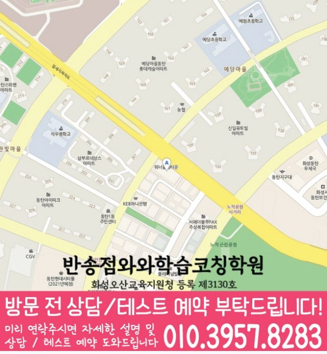

Middle school Korean · English · Math
반송동 중학생 국영수학원
반송동 중학생 국영수학원 선택 전 중등 내신 자료, 최근 오답과 과목별 가능 학년, 센터 위치·비용 확인 기준을 안내합니다.
01 Quick answer
반송동에서 먼저 확인할 내용
반송동에서 중학생 국영수학원을 찾는다면 와와학습코칭센터 반송점의 과목별 가능 학년을 먼저 확인하세요. 학생이 사용하는 학교 자료와 현재 교재를 직접 확인하고, 학생의 실제 풀이 기록에 맞게 과목별로 무엇을 먼저 보완할지 정하는 순서가 필요합니다.
대표 학생 상황
세 과목의 과제 순서와 오답 복습 시점을 스스로 정리하기 어려운 중학생


010-6839-8283상담 전 핵심 안내
경기도 화성시 반송동에서 중학생 영어·수학 학원을 찾는 학생을 위해, 현재 실력 진단부터 개념 정리, 유형별 문제풀이, 오답 관리까지 이어지는 학습 흐름을 안내합니다. 지역 센터는 학생마다 다른 성취도와 약점을 확인해 목표에 맞는 로드맵을 제시하고, 학습 기록이 이어지도록 수업과 코칭을 함께 진행합니다. 반송동 중학생 상담에서는 수업 뒤 설명 내용을 최근 결과와 비교해 다음 과제에 반영합니다. 상담 장소는 경기도 화성시 반송동 동탄원천로 163 503호로 안내되어 있습니다. 중학생의 경우 방문 전 센터 위치와 학생의 왕복 이동 시간을 다시 확인하세요.
처음 상담에서 구분할 학습 과제
반송동 학습 과정에서는 과제 이행 기록을 바탕으로 보완할 단원을 구분합니다. 처음부터 많은 문제를 풀기보다 개념 이해도와 풀이 습관을 먼저 확인해, 학생에게 맞는 학습 순서를 설계합니다.
영어·수학 균형 관리. 영어는 어휘·독해·문법의 연결 흐름을 점검하고, 수학은 개념·유형·오답 원인을 구분해 단계별로 보완합니다.
반송동 국어·영어·수학 학습 계획에서 수학 학습을 확인할 때는 선행 단원 이름보다 계산 실수, 조건 정리, 풀이 과정 누락처럼 자녀가 반복하는 오류를 먼저 확인하는 편이 실속 있습니다. 재풀이 결과와 연결해 과목별 피드백이 남으면 국어·영어·수학을 한곳에서 보더라도 세 과목이 똑같은 방식으로 흘러가는 문제를 줄일 수 있습니다. 반송동 국어 수업에서는 많은 지문보다 핵심 내용과 선택지 근거, 서술 과정을 살펴야 비슷한 공부 습관을 가진 학생의 감점 원인을 찾기 쉽습니다. 경기도 화성시 반송동 중학생 영어 계획에는 어휘, 문장 해석과 교과서 표현의 재확인 날짜가 필요합니다.
설명을 듣고 풀이로 확인하는 과정
설명보다 이해를 우선합니다. 학생이 어디에서 막히는지 대화와 풀이 과정을 통해 파악하고, 필요한 개념을 다시 연결해 이해가 남도록 지도합니다.
학습 태도까지 함께 봅니다. 숙제, 복습, 오답 정리 습관을 점검해 수업 시간이 일회성으로 끝나지 않게 학습 루틴을 만들어드립니다.
반송동 중학생은 학교 수업, 수행평가 준비, 학원 과제, 가정 복습이 한 주 안에 겹치기 때문에 재풀이 결과 기준을 상담 때 함께 확인하는 것이 좋습니다. 점검할 내용이 있는 학생의 경우 이동 시간이 길거나 수업 후 복습 시간이 사라지면 이해한 내용을 오래 가져가기 어려워, 시간표와 관리 방식이 같이 맞아야 합니다. 반송동에서는 수업 내용과 함께 실제 등하원 동선과 가정 복습 시간을 놓고 지속 가능한 계획인지 살펴보세요. 중학생의 경우 실제 방문 전 건물 위치와 현재 개설 과목, 가능한 수업 시각을 다시 문의하세요.
반송동 학교 일정과 현재 교재를 함께 확인하기
상담 자료를 정리하면, 제공 자료에는 반송동 중학교 목록이 따로 정리되어 있지 않습니다. 실제 학습 범위를 확인하면, 학생의 실제 시험 범위표·학교 프린트·수행평가 일정 자료를 준비해 현재 범위와 과제 일정을 확인하는 것이 정확합니다.
학생 자료를 먼저 펼쳐 보면, 학교 목록이 없어도 현재 교재와 과제, 평가 자료를 과목별로 준비하면 반송동 학생의 보완 순서를 구체적으로 확인할 수 있습니다.
개념 확인부터 오답 복습까지
1. 현재 수준 확인. 학년, 학교 진도, 최근 시험 흐름을 바탕으로 부족한 단원과 자주 틀리는 유형을 구체적으로 확인합니다.
2. 개념 정리와 유형 학습. 바로 문제풀이로 넘어가기보다 핵심 개념을 정리한 뒤, 대표 유형부터 응용 문제까지 단계적으로 연습합니다.
3. 오답 관리와 학습 피드백. 틀린 문제를 단순 재풀이로 끝내지 않고, 왜 틀렸는지와 다음에 어떻게 풀어야 하는지까지 정리해 재발을 줄입니다.
학년 단계에 맞춘 준비 기준
중1. 기초 문법·독해 틀을 잡고, 수학은 개념 이해 중심으로 유형을 정리합니다. 반송동 학습 순서를 정할 때는 오답 원인을 바탕으로 다음 학습 계획을 조정합니다.
중2. 단원별 약점을 빠르게 찾아 문법·유형 반복 점검으로 성취도 변화를 단원별로 확인합니다. 수학은 계산 실수와 개념 누락을 오답으로 분류해 집중 보완합니다.
중3. 내신 대비와 수행평가 준비를 함께 고려해 영어·수학 학습 전략을 세웁니다. 시간 관리, 오답 패턴 분석, 핵심 단원 반복을 통해 시험 성과를 목표로 지도합니다.
시험 대비. 시험 범위와 제공된 시험지의 문항 유형에 맞춰 복습 계획을 조정하고, 약한 유형을 우선 공략합니다. 반송동 과목별 점검에서는 학습 시간 배분을 바탕으로 다음 보완 순서를 정합니다.
반송동 지역 센터는 학생의 현재 상태를 기준으로 필요한 학습을 단계별로 정리하고, 상담을 통해 중학생 영어·수학 학습 방향과 학습 변화 로드맵을 자세히 정리합니다.
02 Consultation examples
반송동 학부모 상담 상황 예시
아래 내용은 실제 고객 후기나 성적 결과가 아니라, 상담에서 확인할 질문을 이해하기 위한 상황 예시입니다.
반송동 중학생 자녀의 최근 시험지와 오답 노트를 학부모가 함께 준비한 상황입니다. 상담에서는 세 과목을 모두 늘리기보다 먼저 바꿀 과목과 복습 시점을 정합니다.
반송동에서 제공된 중학교 목록이 없어 학생의 실제 시험 범위표·학교 프린트·수행평가 일정 자료를 직접 준비해 질문하는 상담 예시입니다. 센터의 개설 과목과 가능 학년을 확인한 뒤 학생의 귀가 시간, 과제량과 시험 기간 보강 기준을 같은 메모에 정리합니다.
03 FAQ
반송동 중학생 국영수학원 자주 묻는 질문
학부모님이 상담 전에 자주 확인하는 내용을 질문과 답변으로 정리했습니다.
반송동 중학생 국영수학원이 필요한지 어떤 기록으로 판단하나요?
학교 일정과 학원 과제를 한 주 안에 배치하기 어렵다면 최근 시간표와 과제 기록을 대조해 보세요. 반송동 상담에서는 과목별 최소 복습량도 확인할 수 있습니다.
세 과목을 함께 배우더라도 반송동 상담에서 따로 확인할 부분은 무엇인가요?
반송동 상담에서는 세 과목을 같은 분량으로 나누기보다 최근 시험과 학교 일정, 반복 오답을 기준으로 우선순위를 정합니다. 과목별 완료 기준이 있어야 계획과 실제 실행의 차이를 확인할 수 있습니다.
반송동 중학교 목록이 없는 경우 상담은 어떻게 준비하나요?
반송동의 확인된 학교 목록이 없으므로 임의 정보를 넣지 않았습니다. 실제 교재·학교 자료와 희망 센터의 과목 운영 범위를 직접 대조하는 방식이 정확합니다.
반송동 학부모가 센터 운영 정보를 확인할 순서는 무엇인가요?
실제 방문 위치는 위 센터 확인 정보에서 확인할 수 있습니다. 반송동 방문 전에는 센터별 교습비 확인 버튼에서 제공 자료를 볼 수 있습니다. 실제 개설 과목, 가능 학년과 수업 시간을 한 번 더 확인하는 편이 정확합니다.
04 Continue
반송동 페이지 이동
카테고리 전체 지역 또는 앞뒤 지역 안내로 이동할 수 있습니다.